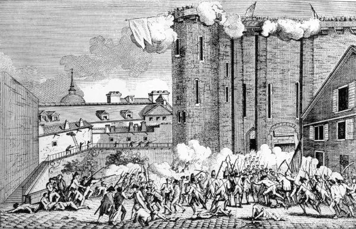

A Revolução Francesa foi o ciclo revolucionário, ocorrido entre 1789 e 1799, responsável pelo fim dos privilégios da aristocracia e pelo término do Antigo Regime.

Revolução Francesa foi o ciclo revolucionário que aconteceu na França
entre 1789 e 1799 e
que marcou o fim do absolutismo nesse país. Essa revolução, além de seu caráter burguês,
teve uma grande participação popular e atingiu um alto grau de radicalismo, uma vez que a
situação do povo francês era precária em virtude da crise que o país enfrentava.
Essa revolução foi um marco na história da humanidade, porque inaugurou um processo que
levou à universalização dos direitos sociais e das liberdades individuais a partir da
Declaração dos Direitos do Homem e do Cidadão. Também abriu caminho para a consolidação de
um sistema republicano pautado pela representatividade popular, hoje chamado de democracia
representativa. A Revolução Francesa só foi possível graças à popularização dos
ideais do
Iluminismo.
- A Revolução Francesa foi o evento histórico que deu início ao que se
chama de Idade
Contemporânea na história. Esse processo revolucionário durou dez anos e levou ao fim do
absolutismo na França.
- O contexto da França na ocasião do estouro da Revolução Francesa envolvia
uma sociedade
dividida em classes (clero, nobreza e povo) e extremamente desigual, além de ser um país
atrasado economicamente.
- Para tentar resolver o cenário de crise em que estava o país, convocou-se
a Assembleia dos
Estados Gerais, mas na ocasião os interesses do clero e da nobreza novamente se sobrepuseram
ao Terceiro Estado.
- Insatisfeira, a população rebelou-se, tomando a prisão conhecida como
Bastilha e iniciando a
Revolução Francesa.
- A Revolução Francesa dividiu-se em três fases: Assembleia Nacional
Constituinte e Assembleia
Legislativa (1789-1792), Convenção (1792-1795) e Diretório (1795-1799).
ㅤ ° Na primeira fase, houve o anúncio da Declaração dos Direitos do Homem e do Cidadão e foi
promulgada uma Constituição, em meio à radicalização da população.
ㅤ ° Na segunda fase, instaurou-se uma república e teve início o período de Terror, no qual
jacobinos, liderados por Maximilien Robespierre, estiveram no poder.
ㅤ ° Na terceira fase, os girondinos retomaram o poder com a derrocada jacobina e redigiram
outra
Constituição. Essa fase abriu espaço para ascensão de Napoleão Bonaparte ao poder.
- São consequências do processo revolucionário francês: fim do absolutismo,
popularização da
república, separação entre os poderes etc.
A Revolução Francesa foi resultado da crise política, econômica e social que a França
enfrentou no final do século XVIII. Essa crise marcou o fim da monarquia absolutista que
existia na França há séculos e da antiga ordem de privilégios que constituía o Antigo Regime
francês. Nessa época, a França era governada por Luís XVI, e a sociedade era
dividida em
classes sociais, conhecidas como Estados:
Primeiro Estado: clero;
Segundo Estado: nobreza;
Terceiro Estado: povo, definição genérica que incorpora o restante da
sociedade francesa.
A sociedade francesa era muito bem definida: um grupo que possuía uma série de privilégios
em detrimento do restante do país. É importante observar que o Terceiro Estado era uma
classe extremamente heterogênea, formada por grupos distintos, como a burguesia e o
campesinato.
De qualquer forma, a sociedade francesa era marcada por uma desigualdade
extrema, uma vez
que nobreza e clero gozavam de privilégios, como a isenção de determinados tributos e o
direito de cobrar impostos por suas terras. Essa desigualdade social era a raiz da crise
enfrentada pela França no século XVIII.
A França, nesse período, começou a sofrer as consequências de seu atraso
econômico em
relação às mudanças que estavam acontecendo no mundo por causa do avanço do capitalismo. As
tentativas de reforma que haviam sido cogitadas na segunda metade do século XVIII
fracassaram, porque nobreza e clero impunham forte resistência a qualquer medida que
resultasse na perda de seus privilégios.
Além do atraso quanto ao avanço do capitalismo, principalmente em comparação com a
Inglaterra, havia também os gastos elevados e desnecessários do governo francês
nessa época.
Um grande exemplo foi o envolvimento da França na Revolução Americana, o que causou um
grande impacto na economia francesa.
O resultado foi uma crise econômica duríssima que impactou diretamente as relações sociais,
pois a nobreza intensificou a exploração sobre o povo, principalmente sobre o campesinato e
a classe média francesa. Isso aconteceu em decorrência da ocupação de cargos governamentais
pela nobreza (até então, esses cargos eram destinados à classe média) e do aumento dos
impostos cobrados dos camponeses.
Esse aumento de tributos foi extremamente pesado, pois grande parte dos camponeses não
possuía terras. Assim, foram obrigados a ceder uma parcela cada vez maior de sua renda, que
era utilizada basicamente para a própria subsistência. Dessa forma, a situação do
campesinato nos 20 anos que antecederam a Revolução Francesa agravou-se
consideravelmente.
Segundo o historiador Hobsbawm, o Estado francês gastava cerca de 20% a mais do que deveria,
usava 50% do seu orçamento para pagar dívidas, e a inflação crescia rapidamente.|1| Tamanha
crise econômica demandava reformas, mas, como mencionado, nobreza e clero não estavam
dispostos a abrir mão de seus privilégios.
Em 1788, as colheitas na França haviam sido ruins, o que aumentou consideravelmente o custo
de vida tanto no campo quanto nas cidades. Logo, em 1789, a França já se encontrava em
estado avançado de convulsão social. O efeito disso foi que a crise instalada nesse
momento
empurrou as pessoas para a rebelião e para o banditismo. A fim de contornar
esse cenário, os
Estados Gerais foram convocados.
Os Estados Gerais eram uma espécie de assembleia que surgiu na França medieval e que
era
convocada em momentos de crise (a última convocação havia sido feita em 1614).
O povo
francês via nessa assembleia uma forma de obter soluções para a situação do país. Para
entender essa esperança popular, é importante saber como os Estados Gerais
funcionavam.
Os Estados Gerais reuniam representantes dos três Estados que formavam a
sociedade francesa.
As soluções debatidas nesse conselho eram determinadas a partir de votação, que era
realizada pelo Estado, e não pelo indivíduo. Sendo assim, nobreza e clero sempre se uniam
para derrotar o Terceiro Estado.
Esquema da organização social na França antes da Revolução Francesa, dividida em clero,
nobreza e povo.
O grande problema é que, naquele momento, os representantes do Terceiro Estado começaram a
exigir que o voto fosse individual, o que possibilitaria que as propostas da burguesia
(grupo que representava o povo no conselho) fossem aprovadas. A proposição do
Terceiro
Estado por voto individual foi rejeitada, o que o motivou a criar uma
Assembleia Nacional
Constituinte.
Todo esse contexto fez com que o povo colocasse suas esperanças nos representantes do
Terceiro Estado. Assim, o apoio popular foi a chave do sucesso das ações da Assembleia
Nacional Constituinte. A população, já insatisfeita, enfureceu-se quando o
rei se mostrou
contrário à Constituição que estava sendo elaborada e ordenou o fechamento da
Constituinte.
Assim, em 14 de julho de 1789, a população parisiense conhecida como sans-culottes
rebelou-se e atacou a Bastilha, prisão para onde eram enviados os opositores do
Absolutismo
Francês e símbolo do Antigo Regime. A Queda da Bastilha, nome pelo qual ficou conhecida a
tomada da prisão pela população parisiense, marcou o início da Revolução Francesa e espalhou
o fervor revolucionário pelo país. Para saber mais sobre as causas da Revolução Francesa.
A partir da Queda da Bastilha, o processo revolucionário francês estendeu-se por dez anos e
só foi finalizado com o Golpe de 18 de Brumário, organizado por Napoleão
Bonaparte. Toda a
extensão do processo revolucionário francês é organizada em três fases:
1.Assembleia Nacional Constituinte e Assembleia Legislativa (1789-1792)
2.Convenção (1792-1795)
3.Diretório (1795-1799)
Esse é o período inicial da Revolução Francesa e corresponde aos anos em
que os
constituintes redigiram uma Constituição para a França e ao período da Assembleia
Legislativa. Como mencionado, a Queda da Bastilha fez com que se espalhasse o processo
revolucionário por todo o país. Os camponeses, temerosos de que a aristocracia reagisse e
deixasse-os sem alimentos, partiram para o ataque.
Essa investida, conhecida como Grande Medo, aconteceu entre julho e agosto de 1789 e foi
marcada por ataques e saqueamentos contra propriedades de aristocratas e,
muitas vezes, pelo
assassinato dos donos desses locais. Os camponeses lutavam pelo fim de alguns impostos e
exigiam que fosse garantido a eles um maior acesso aos alimentos — a fome era um problema
grave entre o campesinato.
Com a radicalização do povo nesse contexto, uma série de mudanças aconteceu na França. Os
privilégios feudais foram abolidos no começo de agosto, e, no fim desse mês, foi
anunciada a
Declaração dos Direitos do Homem e do Cidadão, talvez o documento mais
importante de toda a
Revolução Francesa. Esse documento determinava, teoricamente, que todos os homens eram
iguais perante a lei.
A radicalização popular fez com que a classe média e a burguesia francesa assumissem uma
posição conservadora como forma de frear o ímpeto do povo. Já a nobreza e o clero
iniciaram
uma fuga em massa da França, mudando-se para países como Áustria e Prússia.
Além disso,
começaram uma conspiração contrarrevolucionária, que tinha como objetivo reverter as
mudanças que estavam em curso.
O próprio rei Luís XVI tentou fugir da França em 1791, mas foi reconhecido quando se
aproximava da fronteira com a Bélgica. Depois de recapturado, foi reconduzido ao Palácio de
Tulherias, localizado em Paris. Esse era o local onde o rei morava desde 1789, quando os
revolucionários obrigaram-no a abandonar Versalhes.
Nesse período, os revolucionários também atacaram os privilégios do clero por meio da
aprovação da Constituição Civil do Clero, em 1790. Essa medida tentou subjugar a Igreja
Francesa à autoridade do Estado e contribuiu largamente para que o clero francês aderisse ao
esforço contrarrevolucionário.
As tentativas de barrar a radicalização da revolução tornaram-se claras quando foi
promulgada a nova Constituição Francesa, em 1791. Ela transformou a França em
uma monarquia
constitucional e frustrou aqueles que esperavam que a França seria uma
república com ampla
democracia. Com isso, a Assembleia Nacional Constituinte transformou-se em Assembleia
Legislativa.
Consolidaram-se, então, os dois grandes grupos políticos que marcaram a Revolução Francesa:
girondinos e jacobinos. Esses grupos possuíam visões radicalmente diferentes em relação à
condução do processo revolucionário. Os girondinos entendiam que as mudanças deveriam ser
contidas, já os jacobinos achavam que as mudanças deveriam ser mais radicalizadas.
A Assembleia Legislativa também deu início à guerra contra outras nações europeias. O
processo revolucionário francês era visto como uma grande ameaça por outras nações
absolutistas da Europa. Assim, muitas começaram a conspirar a possibilidade de
invadir o
país. Antecipando-se a isso, a Assembleia declarou guerra contra a Áustria e a Prússia. A
defesa da França foi realizada pela Guarda Nacional, tropa criada em Paris no começo da
revolução.
Essa declaração de guerra, que aconteceu em abril de 1792, abriu caminho para a
radicalização da Revolução Francesa e deu início a um período conhecido como
Terror. O clima
de guerra empurrou a sociedade francesa para o lado dos jacobinos e dos sans-culottes. O
resultado disso foi que os sans-culottes organizaram-se, derrubaram a monarquia francesa e
instauraram a república.
Com a instauração da República na França, a Assembleia Legislativa foi substituída pela
Convenção, inaugurada em setembro de 1792. Os membros da Convenção foram determinados por
sufrágio universal masculino. Com isso, Luís XVI deixou de ser o rei da
França, e um novo
debate surgiu: a execução do rei.
Enquanto os girondinos exigiam que Luís XVI fosse exilado, os jacobinos exigiam sua
execução. O destino do rei foi selado quando foram descobertas evidências que associavam-no
ao esforço contrarrevolucionário realizado no exterior. Assim, o rei foi executado
em
janeiro de 1793.
O regicídio inaugurou o período do Terror, no qual jacobinos liderados por
Maximilien
Robespierre radicalizaram a revolução na tentativa de impor uma ampla agenda reformista no
país. Apesar de a Convenção ser a instituição mais importante do país, os jacobinos
impuseram seus ideais por meio do Comitê de Salvação Pública.
A república liderada por jacobinos ficou marcada por conseguir estabilizar a situação do
país e colocar a guerra e as massas populares sob controle. Apesar disso, a guerra
agravou-se depois da execução do rei, porque os países absolutistas alarmaram-se com o
regicídio cometido pelos jacobinos. Outra marca jacobina era a perseguição a todos os seus
opositores.
Com a Lei dos Suspeitos, os jacobinos começaram a perseguir todos aqueles que eram
considerados inimigos da revolução. Os suspeitos eram julgados e, se
condenados,
guilhotinados.
A fase do Terror foi responsável por 17 mil mortes em cerca de 14 meses.|2| Foram abolidos
os privilégios feudais que existiam no país e imposta uma economia de guerra. As medidas na
economia, no entanto, atrasaram o desenvolvimento capitalista da França.
A atuação dos jacobinos gerou, naturalmente, uma reação dos grupos conservadores, representados pelos girondinos. Essa articulação contou com o apoio da alta burguesia francesa e resultou em um golpe conhecido como Reação Termidoriana, que aconteceu em 1794. A partir dessa data, os girondinos tomaram uma série de medidas que reverteram as decisões jacobinas. Em 1795, a Convenção foi substituída pelo Diretório. Com a Reação Termidoriana, vários jacobinos, incluindo Robespierre, foram guilhotinados.
Com a derrocada jacobina, os girondinos e a alta burguesia francesa redigiram uma
nova
Constituição para a França e restauraram algumas medidas, como o voto
censitário. Foi um
período autoritário no qual o exército francês foi utilizado várias vezes para reprimir o
povo. Além disso, houve resistência às tentativas de golpe por parte de jacobinos e
monarquistas.
A instabilidade que a França vivia fez com que a alta burguesia francesa defendesse esse
autoritarismo, pois as massas estavam insatisfeitas, a economia estava ruim e a guerra
ameaçava o país. Por isso, passaram a defender a implantação de uma ditadura no
país sob o
governo de uma figura forte, autoritária. Dessa forma, nasceu o apoio a Napoleão Bonaparte,
general famoso por liderar os exércitos franceses na luta contra as coalizões
internacionais.
O resultado disso foi a organização de um golpe por Napoleão, que, em 1799,
tomou o poder da
França em um evento conhecido como Golpe do 18 de Brumário. Iniciou-se, então, o Período
Napoleônico.
Os dez anos da Revolução Francesa geraram diversas consequências para a França e para o
mundo. Algumas consequências de destaque foram:
- fim dos privilégios de classe na França;
- fim de qualquer resquício do feudalismo no país e início da consolidação do capitalismo;
- início do processo de queda do absolutismo na Europa e na França;
- inspiração para movimentos de independência no continente americano;
- popularização da república como forma de governo;
- separação entre os poderes;
- imposição das liberdades individuais, que tornavam os homens “iguais perante a lei”.